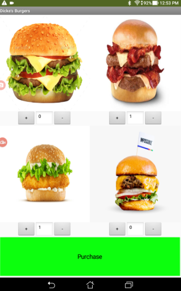
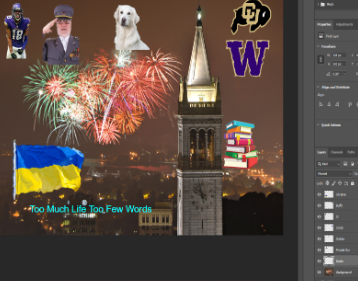

PROJECTS OF JOC.
APP inventor was a lot of fun and it helped me be ready for photoshop because it taught me to insert images and manipulate them. I was pretty proud of my burger APP cause what can I say, I love me a good burger.
This was definitely my favorite project to do because there were no guidlines you could do whatever you want with your project. I added all the things I love and all the things I get to look forward to in the future(the background is of Oakland).